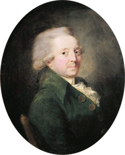
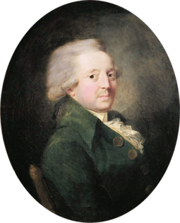

The Metric System
The standard system of measurement used globally
Introduction
The metric system is a decimal-based system of measurement that was first developed in France during the late 18th century. It is the standard system used in most of the world for scientific, industrial, and everyday purposes. Unlike traditional measurement systems that were based on arbitrary constants (such as the length of a king's foot), the metric system was designed to be logical and standardized. It uses multiples of 10 for conversion, making it easier to convert between units.
Key Features of the Metric System
- Decimal-Based: The system is based on powers of 10, simplifying conversion between units. For example, 1 kilometer equals 1,000 meters.
- Standardized Units: The metric system uses standardized base units such as meter, kilogram, and second, which are consistent worldwide.
- Prefix System: Metric prefixes like kilo- (k), centi- (c), and milli- (m) represent multiples and submultiples of the base units, making conversions straightforward.
The Base Units of the Metric System
The metric system uses several base units to measure different quantities. These include:
- Meter (m): The base unit of length, used to measure distance or size.
- Kilogram (kg): The base unit of mass, used to measure the amount of matter in an object.
- Second (s): The base unit of time, used to measure the duration of events.
- Ampere (A): The base unit of electric current, used to measure the flow of electric charge.
- Kelvin (K): The base unit of temperature, used to measure thermal energy.
- Mole (mol): The base unit of amount of substance, used to measure the number of particles in a sample.
- Candela (cd): The base unit of luminous intensity, used to measure the brightness of light emitted from a source.
History of the Metric System
The metric system was introduced in France during the late 18th century, during the French Revolution. The goal was to create a system of measurement that was universal, logical, and based on scientific principles. Before the metric system, measurements were often based on local standards or the size of the ruler used by the monarch. The metric system solved this by creating consistent, reproducible units of measurement based on natural phenomena, such as the length of the Earth's meridian and the mass of a liter of water.
The system was gradually adopted by other countries and evolved over time. It became more formalized in the 19th and 20th centuries, with the establishment of the International System of Units (SI) in 1960. The SI system standardized the metric system and provided precise definitions for the units, based on physical constants.
.png) 
